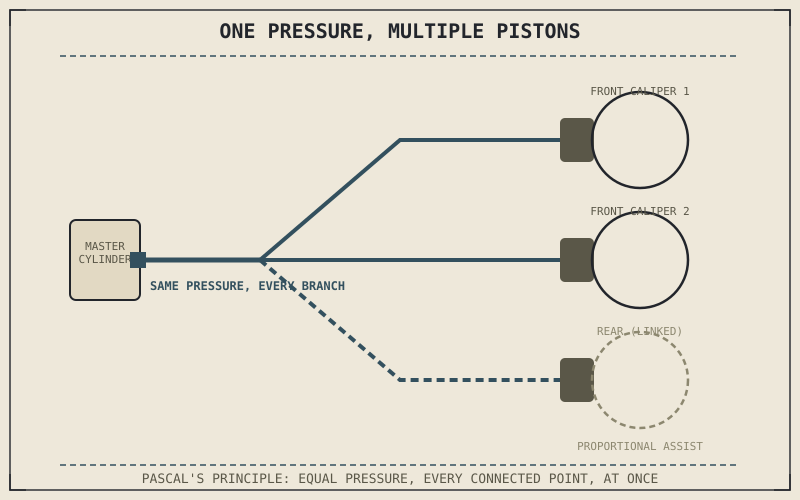

Pascal's principle — that pressure applied to an enclosed, incompressible fluid transmits undiminished to every point in that fluid — is the entire physical basis of every hydraulic brake system ever built. Chapter 7.3 introduced the master cylinder and caliper as the two ends of that system; this chapter looks directly at the principle connecting them, and at what happens when the fluid path between the two ends gets more complicated than a single line.
One Principle, Multiplied by Geometry
Because pressure transmits equally throughout the fluid, the force delivered at the caliper piston is simply that pressure multiplied by the caliper piston's area — which is exactly the mechanism Chapter 7.3 described for force amplification between master cylinder and caliper. The genuinely useful consequence of Pascal's principle is that this pressure reaches every point in the system simultaneously and identically, which means a single master cylinder can drive multiple caliper pistons, or even multiple calipers, all receiving the same pressure at the same instant, regardless of how far apart they are or how the lines are routed between them.
Linked and Combined Braking Systems
Some motorcycles use that shared-pressure property deliberately, linking the front and rear brakes so that activating one lever also applies a proportion of braking force to the other wheel — a system generally called linked or combined braking. The engineering goal is to help a rider who might under-use one brake, often the front, get closer to the more effective combined braking this part's coming chapters on weight transfer and brake balance will explain is usually available. This is implemented through additional valving and sometimes a secondary hydraulic circuit rather than simply plumbing both calipers to one master cylinder outright, since the front and rear wheels need meaningfully different proportions of total braking force, a subject Chapter 7.6 covers directly.
Pascal's principle means one master cylinder's pressure reaches every connected piston identically, at the same instant, regardless of routing — the property that makes multi-piston calipers, dual front discs, and linked braking systems all mechanically possible from a single, simple physical law.

A single master cylinder shown driving hydraulic pressure equally through split brake lines to two separate front caliper pistons and, in a linked system, a proportion of pressure also reaching the rear caliper.
Why Line Routing and Rigidity Matter
Because the whole system depends on transmitting pressure without loss, the brake lines themselves have to resist expanding under that pressure — a flexible rubber line swells slightly as pressure rises, absorbing some of the lever's input the same way trapped air does, just less severely. This is why braided steel lines, wrapped around the flexible inner hose, are a common performance upgrade: they resist that expansion far more than rubber alone, producing a firmer, more direct lever feel by minimizing the small amount of lever travel lost to line expansion rather than transmitted as pressure.
A Common Misconception, Cleared Up Early
It's tempting to think a linked or combined braking system is simply doing the rider's job for them — deciding brake balance automatically so the rider doesn't have to think about it at all. In practice, these systems typically apply a calculated proportion of assistance rather than fully overriding the rider's own inputs, and the underlying front-rear balance question Chapter 7.6 will cover in depth doesn't disappear just because a linking valve is involved — it's engineered into the valve's design rather than left entirely to the rider's feel, which is a difference in where the balancing decision is made, not proof that balance stops mattering.
Where This Leads
Hydraulics explain how brake force reaches the wheels reliably, but a motorcycle actively braking isn't a static system — its weight is shifting forward as it slows, changing how much grip is actually available at each wheel in real time. Chapter 7.5 turns to that weight transfer directly.
Key Concepts to Remember
- Pascal's principle means pressure in a hydraulic brake system transmits equally to every connected point, regardless of routing or distance.
- Linked or combined braking systems use that shared-pressure property to apply a calculated proportion of assistance between the front and rear brakes.
- Line rigidity matters because a flexible line expands slightly under pressure, absorbing lever input similarly to trapped air, which is why braided lines improve lever feel.
Cross-References
| ← Ch. 7.3 | Introduced the master cylinder and caliper as the two ends of the hydraulic system; this chapter explains the principle transmitting force between them. |
| → Ch. 7.6 | Covers front-rear brake balance directly, expanding on the proportioning question linked braking systems address mechanically. (Not yet published.) |
| → Ch. 7.5 | Covers weight transfer under braking, addressing how available grip at each wheel changes in real time as the motorcycle slows. |